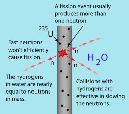

Moderation of Fast Neutrons
|  |
The neutrons emitted in nuclear fission reactions have high energies, typically in the range of 1 MeV. But the cross section for neutron capture leading to fission is greatest for neutrons of energy around 1 eV, a million times less. Neutrons with energies less than one electron volt are commonly referred to as "thermal neutrons" since they have energies similar to what particles have as a result of ordinary room-temperature thermal energy. |
It is necessary to slow down the neutrons for efficient operation of a nuclear reactor, a process called moderation. While neutrons are efficiently slowed by inelastic scattering from U-238 , the non-fissionable isotope of uranium, when their energies are higher than 1 MeV, the remainder of the process of slowing them down must be done by elastic scattering from other nuclei. When a neutron collides elastically with another nucleus at rest in the medium, it transfers some of its energy to it. The maximum transfer of energy occurs when the target nucleus is comparable in mass to the projectile. Water and carbon (graphite) are commonly used moderators. Water is a good moderator, but the hydrogens in the water molecule have a fairly high cross section for neutron capture, removing neutrons from the fission process. Heavy water, used as moderator in Canadian reactors, avoids this loss.
Conceptually, the effectiveness of water as a moderator can be compared to what happens on a pool table when the cue ball strikes another ball on the table head-on. The head-on elastic collision with an equally massive target ball at rest stops the cue ball and sends the target ball forward with the cue ball's original speed. The hydrogens in the water play the role of the target ball and are effective in dramatically slowing the fast neutrons, even when the collision is not head-on.
Another conceptual image which may help with understanding the need for moderation is the nature of a short putt on the green of a golf course. The original experiments in the laboratory of Otto Hahn in Germany tried unsuccessfully to get uranium to absorb neutrons by bombarding them with fast neutrons - 235U just has a very small probability of absorbing fast neutrons. But it has a high probability of absorbing slow ones. If your golf ball is a few centimeters from the hole, you don't get out your driver and hit it as hard as possible - it just will not go into the cup that way. But a gentle tap with your putter has a high probability of success. Moderation to slow the neutrons by collisions with nuclei of similar mass dramatically increases the probability of neutron capture leading to fission.
|
Index
Fission concepts |